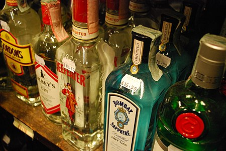

«Gin» redirige aquí. Para otras acepciones, véase Gin (desambiguación). La ginebra es una bebida alcohólica destilada que posee un sabor predominante a nebrinas, los frutos del enebro (Juniperus communis). La ginebra es una de las categorías de destilados más amplia, con diversas regiones de producción, estilos y perfiles de sabor, que tienen en común las gálbulas o nebrinas de enebro.[cita requerida] Desde sus orígenes más tempranos en la Edad Media, la bebida ha evolucionado de una medicina herbal a un objeto de comercio en la industria de los licores espirituosos. La ginebra se desarrolló a partir del destilado neerlandés "Jenever" y se hizo popular en Gran Bretaña (particularmente en Londres) cuando Guillermo de Orange se convirtió en el rey Guillermo III de Inglaterra. La ginebra contemporánea se produce de diferentes maneras, a partir de una amplia gama de ingredientes herbales, dando lugar a una serie de estilos y marcas distintas. Después del enebro, la ginebra tiende a ser aromatizada con botánicos / herbales, de especias, flores o frutas o, a menudo, una combinación de estos. Se consume con más frecuencia en mezcla con agua tónica.
Para que una bebida pueda llamarse ginebra ha de tener sabor a nebrina. La legislación de la Unión Europea distingue hasta cuatro denominaciones de venta en relación con las bebidas alcohólicas con sabor a nebrina. La primera denominación lleva por título “Bebidas alcohólicas aromatizadas con enebro”y añade que la palabra “ginebra” puede aparecer en esa denominación de venta. No es obligatorio su uso. La “gin de Mahón” es expresamente acogida como “gin” entre las “bebidas alcohólicas aromatizadas con enebro”. Se acogen a esta denominación de venta la mayoría de las bebidas basadas en la nebrina. Se presentan, bien como “genièvre”, como Plymouth gin, como jenever, como genever, como gin, como peket, etc. Se hila tan fino que se recogen como denominaciones distintas peket, pékêt, pèket y pèkèt. “Gin” y “genever” no siempre se presentan como mutuamente excluyentes. Tal sucede con la llamada “Bols Genever. Amsterdam gin”. La terminología comunitaria, generalmente precisa, en este caso no está muy cuidada, ya que habla de “enebro”, que es el árbol, y no de su fruto, que es la “nebrina”. El jugo de nebrina no es tóxico; el del árbol sí lo es. El fruto del enebro es calificado de “baya”, cuando no es una “baya”, sino una “gálbula”; es decir, un fruto del estilo del que produce el ciprés, que es de la misma familia.
Esta denominación de venta es la que ha tenido más adhesiones de productos comerciales, hasta el punto de que, en el citado reglamento 110/2008 se acogen a esta denominación diecinueve ginebras de diferentes países, mientras el resto de denominaciones de venta de bebidas aromatizadas con nebrinas ha quedado de momento vacío. Como ya hicimos notar a propósito de la gin de Mahón, las bebidas alcohólicas aromatizadas al enebro pueden presentarse a la venta como gin, que por lo demás es palabra muy genérica. Para la elaboración de “bebidas alcohólicas aromatizadas con enebro” se pueden utilizar tanto las gálbulas del Juniperus communis L. como las del Juniperus oxycedrus L. En cambio, en las restantes denominaciones de venta solo se pueden utilizar las gálbulas del Juniperus communis L.
Se diferencia de la anterior denominación de venta en que no cabe la utilización de las nebrinas del Juniperus oxicedrius L. La base alcohólica no puede ser un aguardiente, sino un alcohol insípido. El precepto establece que el sabor a nebrina ha de ser preponderante, pero admite que se le añadan concretos aromatizantes, minuciosamente regulados, que le dan buqué perfumado. Algunas ginebras de este tipo se presentan como aromatizadas con tal o cual sustancia. Al final, resulta mucho más acusado el sabor a nebrina en las neerlandesas llamadas jenever, que solo saben a cereal y a nebrina.
Esta denominación también excluye las ginebras que tienen como base un aguardiente. El alcohol mínimo inicial ha de ser 96°. En la redestilación es cuando pueden añadirse los sabores. Los aromatizantes están minuciosamente regulados, y son distintos de los del gin, pero producen el mismo efecto de buqué perfumado. El reglamento llega a dar una definición negativa: el gin obtenido únicamente mediante la adición de esencias o de aromas al alcohol etílico de origen agrícola no es un gin destilado. En efecto, sería más bien un vodka aromatizado.
El propio reglamento dice que el London gin es un tipo de gin destilado. Además de los requisitos antes mencionados se exige la ausencia de edulcorantes y de colorantes. Puede ir acompañada del término dry. Siempre es seca. Es la que con más frecuencia tiene puro sabor a nebrina sin añadidos de perfumes aromáticos ni de sabores provenientes de aguardiente de cereal. Por lo general se utiliza alcohol de grano de alta graduación sin aromas ni sabores, de esta forma solo tienen presencia aquellos aromas provenientes de los cítricos y botánicos que la receta indique.